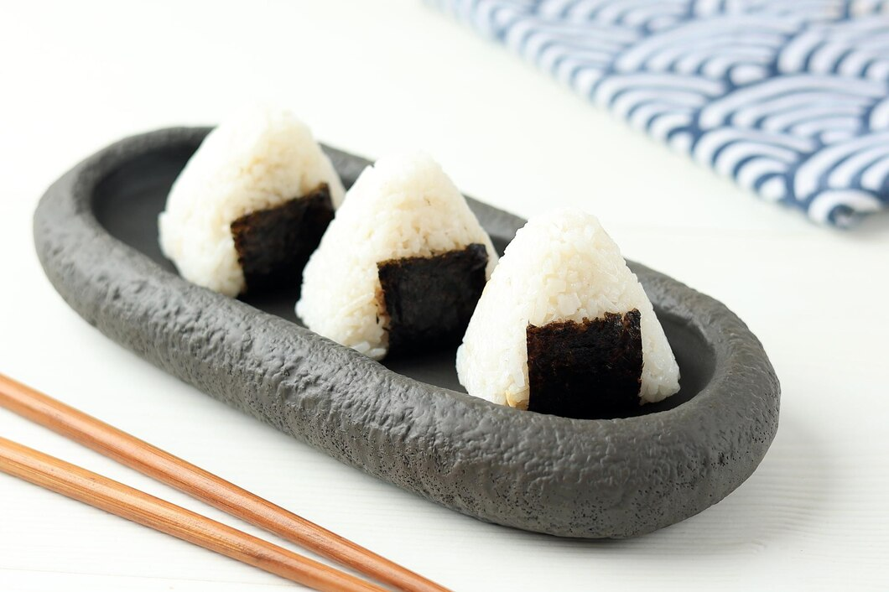
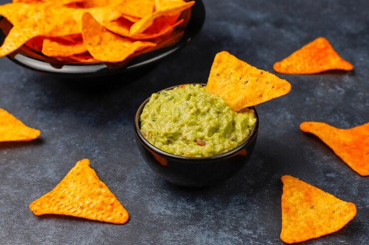
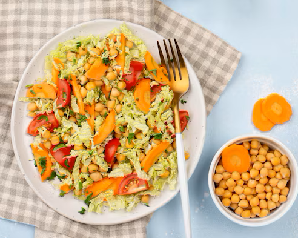
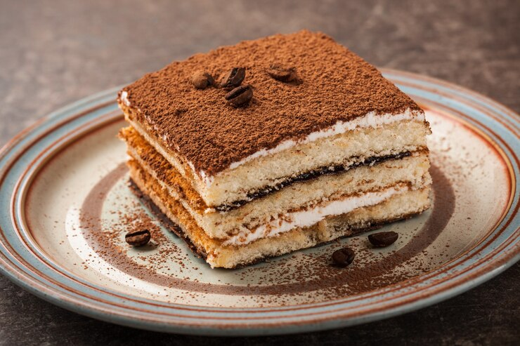
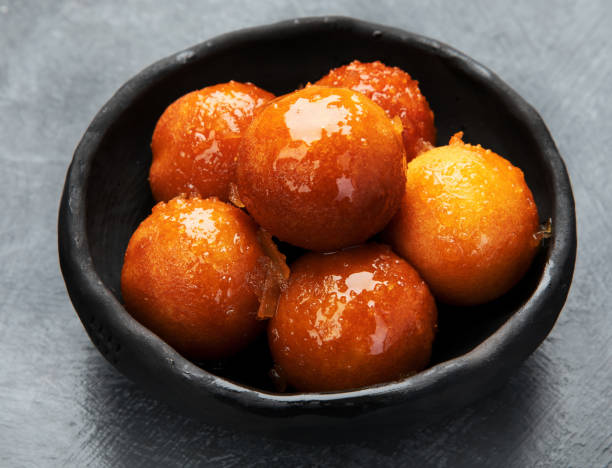

|
 |
 |
Bruschetta |
Spring Rolls |
Mozzarella Sticks |
| ingredients |
ingredients |
ingredients |
- 1 French baguette, sliced
- 2 tbsp olive oil
- 2 cloves garlic, halved
- 4 ripe tomatoes, diced
- 1 tbsp balsamic vinegar
- 1/4 cup fresh basil, chopped
- Salt and pepper to taste
- Optional: mozzarella or parmesan
|
- 8 rice paper wrappers
- 1 cup shredded lettuce or cabbage
- 1/2 cup julienned carrots
- 1/2 cup sliced cucumbers
- 1/2 cup cooked vermicelli noodles
- 1/2 cup cooked shrimp or tofu (optional)
- Fresh mint and cilantro leaves
- Dipping sauce: hoisin-peanut or sweet chili
|
- 12 mozzarella sticks or string cheese, halved
- 1/2 cup all-purpose flour
- 2 eggs, beaten
- 1 cup breadcrumbs (Italian seasoned)
- 1/2 tsp garlic powder
- 1/2 tsp oregano
- Salt to taste
- Oil for deep frying
- Marinara sauce (for dipping)
|
| Instructions |
Instructions |
Instructions |
- Preheat oven to 400°F (200°C). Arrange baguette slices on a baking sheet.
- Brush each slice with olive oil and toast in the oven for 5–7 minutes until golden.
- Rub the toasted bread with halved garlic cloves.
- In a bowl, mix diced tomatoes, basil, balsamic vinegar, salt, and pepper.
- Spoon the tomato mixture over each toast and serve immediately. Optional: Top with shredded mozzarella or parmesan.
|
- Soak a rice paper wrapper in warm water for 10–15 seconds until soft.
- Lay it flat on a clean surface and place lettuce, noodles, veggies, herbs, and protein in the center.
- Fold the sides inward, then roll tightly from the bottom like a burrito.
- Repeat with remaining wrappers and ingredients.
- Serve with your choice of dipping sauce.
|
- Freeze mozzarella sticks for 30 minutes to prevent melting during frying.
- Set up a breading station: flour in one bowl, beaten eggs in another, and breadcrumbs mixed with seasonings in the third.
- Coat each cheese stick in flour, then egg, then breadcrumbs. Repeat egg and breadcrumb coating for extra crispiness.
- Heat oil in a pan over medium heat. Fry sticks in batches for 1–2 minutes until golden brown.
- Drain on paper towels and serve hot with marinara sauce.
|
 |
|
|
Deviled Eggs |
Uramaki Sushi |
Mini Quiches |
| ingredients |
ingredients |
ingredients |
- 6 large eggs
- 3 tablespoons mayonnaise
- 1 teaspoon Dijon mustard
- 1 teaspoon white vinegar
- Salt and black pepper, to taste
- Paprika or chives (for garnish)
|
- 2 cups sushi rice
- 2 ½ cups water
- 3 tablespoons rice vinegar
- 1 tablespoon sugar
- 1 teaspoon salt
- 4 sheets nori (seaweed)
- 1 avocado, sliced
- 1 small cucumber, julienned
- 6 imitation crab sticks or fresh crab
- Sesame seeds (optional)
- Soy sauce, wasabi, and pickled ginger (for serving)
|
- 12 mini tart shells or 1 sheet of puff pastry
- 4 large eggs
- ½ cup milk or heavy cream
- ½ cup shredded cheese (cheddar, Swiss, or your choice)
- ¼ cup cooked bacon bits or sautéed vegetables (e.g., spinach, onions, mushrooms)
- Salt and pepper, to taste
- Butter or oil for greasing
|
| Instructions |
Instructions |
Instructions |
- Place eggs in a pot, cover with water, and bring to a boil. Simmer for 10 minutes.
- Transfer eggs to an ice bath, peel when cooled, and slice in half lengthwise.
- Scoop out yolks into a bowl and mash them with mayonnaise, mustard, vinegar, salt, and pepper until smooth.
- Spoon or pipe the filling back into the egg whites.
- Sprinkle with paprika or chives and chill before serving.
|
- Prepare sushi rice and let it cool. Mix with rice vinegar, sugar, and salt.
- Lay a sheet of plastic wrap over a bamboo sushi mat. Place a nori sheet on it, then spread rice evenly on the nori.
- Sprinkle sesame seeds over the rice, then carefully flip the nori so the rice is underneath.
- Add fillings (e.g., crab sticks, cucumber, avocado) in a line across the center of the nori.
- Use the mat to tightly roll the sushi, sealing the edge with water.
- Slice into even pieces with a wet, sharp knife and serve with soy sauce, wasabi, and pickled ginger.
|
- Preheat oven to 375°F (190°C). Grease a mini muffin pan or use mini tart shells.
- In a skillet, sauté onions, garlic, and optional fillings like spinach, mushrooms, or bacon until softened.
- In a bowl, whisk together eggs, milk or cream, salt, pepper, and shredded cheese.
- Fill each mini crust halfway with sautéed fillings, then pour in the egg mixture.
- Bake for 20–25 minutes or until the quiches are golden and set.
- Let cool slightly before serving warm or at room temperature.
|
 |
 |
 |
Waffles |
Quiche Lorraine |
Bagel with Cream Cheese |
| ingredients |
ingredients |
ingredients |
- 2 cups all-purpose flour
- 2 tablespoons sugar
- 1 tablespoon baking powder
- ½ teaspoon salt
- 2 large eggs
- 1 ¾ cups milk
- ½ cup unsalted butter, melted
- 1 teaspoon vanilla extract
- Optional: fresh fruits, whipped cream, syrup (for topping)
|
- 1 9-inch pie crust (pre-baked)
- 6 slices of bacon, chopped and cooked
- 1 small onion, finely chopped
- 1 ½ cups shredded Gruyère or Swiss cheese
- 3 large eggs
- 1 cup heavy cream
- ¼ teaspoon ground nutmeg
- Salt and pepper, to taste
|
- 2 teaspoons active dry yeast
- 1 ½ tablespoons sugar
- 1 ¼ cups warm water (divided)
- 3 ½ cups bread flour (plus extra for kneading)
- 1 ½ teaspoons salt
- For boiling:
2 tablespoons sugar or honey (optional, for water bath)
- Water for boiling
- Optional toppings:
Sesame seeds, poppy seeds, everything seasoning, coarse salt
- 2 bagels (plain or flavored)
- ½ cup cream cheese (plain or flavored)
- Optional toppings: smoked salmon, sliced tomato, cucumber, capers, red onion, fresh herbs
|
| Instructions |
Instructions |
Instructions |
- Preheat your waffle iron.
- In a large bowl, whisk together the flour, sugar, baking powder, and salt.
- In another bowl, beat the eggs, then add milk, melted butter, and vanilla extract.
- Combine wet and dry ingredients until just mixed (do not overmix).
- Pour batter into the preheated waffle iron and cook until golden brown and crisp.
- Serve warm with butter, syrup, fruits, or toppings of choice.
|
- Preheat oven to 375°F (190°C).
- Place pie crust in a tart pan, trim edges, and prick the bottom with a fork.
- Blind bake the crust for 10 minutes using parchment paper and pie weights; remove weights and bake another 5 minutes.
- In a skillet, cook bacon until crisp; drain and crumble.
- In a bowl, whisk together eggs, cream, salt, pepper, and nutmeg.
- Sprinkle cheese and bacon over the crust. Pour egg mixture on top.
- Bake for 35–40 minutes or until set and lightly golden. Cool slightly before slicing.
|
- To make bagels: Dissolve yeast and sugar in warm water; let sit for 5 minutes.
- Mix in flour and salt to form a stiff dough. Knead for 10 minutes.
- Let dough rise for 1 hour until doubled, then divide into 8 portions and shape into bagels.
- Boil each bagel for 1–2 minutes per side in sweetened water.
- Place on a baking sheet, add toppings if desired, and bake at 425°F (220°C) for 20–25 minutes until golden.
- Cool slightly and slice. Spread with cream cheese and enjoy!
|
 |
 |
 |
Frittata |
Eggs Benedict |
Yogurt Parfrait |
| ingredients |
ingredients |
ingredients |
- 6 large eggs
- 1/4 cup milk or cream
- 1 cup cooked vegetables (like spinach, bell peppers, or zucchini)
- 1/2 cup cooked meat (bacon, sausage, or ham – optional)
- 1/2 cup shredded cheese (cheddar, feta, or mozzarella)
- 1 tbsp olive oil or butter
- Salt and black pepper to taste
- Fresh herbs (parsley, basil – optional)
|
- 4 large eggs
- 2 English muffins, split and toasted
- 4 slices of Canadian bacon or ham
- 2 tsp white vinegar
- Chopped chives (for garnish)
- For the Hollandaise Sauce:
3 egg yolks
- 1 tbsp lemon juice
- 1/2 cup unsalted butter, melted
- Salt and cayenne pepper to taste
|
- 2 cups Greek yogurt or plain yogurt
- 1 cup granola
- 1 cup mixed fresh fruits (berries, banana slices, mango, etc.)
- 1–2 tbsp honey or maple syrup (optional)
- A few mint leaves or nuts for garnish (optional)
|
| Instructions |
Instructions |
Instructions |
- Preheat your oven to 375°F (190°C).
- In a bowl, whisk together eggs, milk, salt, and pepper.
- Heat olive oil or butter in an oven-safe skillet over medium heat.
- Add cooked vegetables and meat, sauté for 1–2 minutes.
- Pour the egg mixture into the skillet and sprinkle cheese evenly.
- Cook on the stovetop for 2–3 minutes, then transfer the skillet to the oven.
- Bake for 10–15 minutes, or until the eggs are set.
- Let it cool slightly, slice, and garnish with herbs before serving.
|
- Make the hollandaise sauce: whisk egg yolks and lemon juice in a bowl over simmering water.
- Slowly add melted butter while whisking until thickened. Season with salt and cayenne.
- In a pan, cook the bacon or ham until lightly browned.
- Poach the eggs: bring a pot of water to a simmer, add vinegar, and gently drop in eggs.
- Poach for 3–4 minutes, then remove with a slotted spoon.
- Assemble: place bacon on toasted muffin halves, top with poached eggs.
- Spoon hollandaise over the eggs, garnish with chives, and serve warm.
|
- In a glass or jar, add a layer of yogurt.
- Add a layer of granola, then a layer of fresh fruits.
- Repeat the layers as desired.
- Drizzle with honey or syrup if using.
- Garnish with mint or nuts and serve immediately.
|
 |
 |
 |
Instant Ramen |
Shawarma |
Samosa |
| ingredients |
ingredients |
ingredients |
- 1 pack instant ramen noodles
- 2 cups water
- 1 egg (optional)
- 1 tsp soy sauce
- ½ tsp sesame oil
- 1 tsp oyster sauce (optional)
- 1 clove garlic, minced
- ½ tsp grated ginger
- ¼ cup sliced mushrooms (shiitake or button)
- ¼ cup chopped bok choy or spinach
- 2 tbsp corn kernels (optional)
- 1 green onion, finely chopped
- 1 tbsp chili oil or sriracha (optional for spice)
- Sesame seeds for garnish
- Lime wedge (optional, for serving)
|
- 500g boneless chicken thighs or beef, thinly sliced
- 3 tbsp plain yogurt
- 2 tbsp olive oil
- 1 tbsp lemon juice
- 3 cloves garlic, minced
- 1 tsp ground cumin
- 1 tsp paprika
- 1 tsp ground coriander
- ½ tsp turmeric
- ½ tsp cinnamon
- Salt and pepper to taste
- Flatbread or pita, for serving
- Sliced tomatoes, cucumbers, lettuce, and red onions
- Garlic sauce or tahini sauce
|
- 2 cups all-purpose flour
- 4 tbsp oil or ghee (for dough)
- Water (as needed for kneading)
- 2 tbsp oil (for filling)
- 2 boiled potatoes, mashed
- ½ cup boiled green peas
- 1 green chili, chopped
- 1 tsp grated ginger
- ½ tsp cumin seeds
- ½ tsp garam masala
- ½ tsp ground coriander
- ½ tsp chili powder
- Salt to taste
- Oil for deep frying
|
| Instructions |
Instructions |
Instructions |
- In a saucepan, boil water, add ramen noodles, and cook until just tender (2–3 mins).
- In another pan, heat sesame oil, sauté garlic and chili flakes for 30 seconds.
- Add cooked noodles (without flavor packet), toss in vegetables, cooked chicken, or tofu.
- Pour a splash of soy sauce and mix in green onions.
- Serve hot topped with a boiled egg, optional corn or seaweed, and enjoy!
|
- Marinate the Meat: In a bowl, combine yogurt, olive oil, lemon juice, garlic, and spices. Add the sliced meat and coat well. Cover and marinate for at least 2 hours or overnight.
- Cook the Meat: Heat a pan or grill over medium-high heat. Cook the marinated meat until browned and cooked through, about 6–8 minutes.
- Prepare the Wraps: Warm flatbreads or pita. Layer with meat, vegetables, and sauce.
- Serve: Roll into wraps or serve open-faced. Enjoy hot!
|
- Make the Dough: Mix flour, salt, and oil. Gradually add water and knead into a firm dough. Cover and rest for 30 minutes.
- Prepare the Filling: Heat oil in a pan. Add cumin seeds, then ginger, green chili, potatoes, peas, and spices. Cook for 5 minutes, then let it cool.
- Shape the Samosas: Divide dough into small balls. Roll each into an oval, cut in half, form a cone, and fill with potato mixture. Seal the edges with water.
- Fry: Heat oil in a deep pan. Fry samosas in batches until golden brown and crisp.
- Serve: Drain on paper towels and enjoy hot with chutney.
|
 |
 |
 |
mexican Tacos |
Cheeseburger |
Chicken Nuggets |
| ingredients |
ingredients |
ingredients |
- 500g ground beef or chicken
- 1 onion, chopped
- 1 bell pepper, chopped
- 1 tbsp garlic powder
- 1 tbsp chili powder
- 1 tsp cumin powder
- Salt and pepper to taste
- 8 soft or hard taco shells
- 1 cup shredded lettuce
- 1 cup diced tomatoes
- 1 cup shredded cheddar cheese
- 1/2 cup sour cream
- 1/4 cup salsa
- Fresh cilantro (optional)
|
- 500g ground beef
- 1 onion, finely chopped
- 1 tbsp Worcestershire sauce
- Salt and pepper to taste
- 4 hamburger buns
- 4 slices cheddar cheese
- Lettuce, tomato, pickles (for toppings)
- Ketchup and mustard (optional)
|
- 500g chicken breast, cut into bite-sized pieces
- 1 cup all-purpose flour
- 2 eggs, beaten
- 1 cup breadcrumbs (preferably panko)
- 1/2 tsp paprika
- 1/2 tsp garlic powder
- Salt and pepper to taste
- Oil for frying
|
| Instructions |
Instructions |
Instructions |
- In a skillet over medium heat, cook the ground beef or chicken until browned.
- Add chopped onion, bell pepper, and cook until softened.
- Stir in garlic powder, chili powder, cumin, salt, and pepper. Cook for 2–3 more minutes.
- Warm taco shells in a separate pan or microwave.
- Fill each shell with the meat mixture.
- Top with shredded lettuce, diced tomatoes, cheese, sour cream, salsa, and cilantro.
- Serve immediately while warm.
|
- In a bowl, mix ground beef, onion, Worcestershire sauce, salt, and pepper.
- Shape the mixture into 4 burger patties.
- Heat a grill or pan over medium heat and cook patties for about 4–5 minutes on each side.
- Place a slice of cheddar cheese on each patty during the last minute to melt.
- Toast burger buns if desired.
- Assemble the burgers with lettuce, tomato, pickles, and sauces of your choice.
- Serve hot.
|
- Season chicken pieces with salt, pepper, paprika, and garlic powder.
- Dredge each piece in flour, dip in beaten eggs, then coat with breadcrumbs.
- Heat oil in a deep pan over medium heat.
- Fry nuggets in batches until golden and crispy, about 4–5 minutes.
- Remove and drain on paper towels.
- Serve with your favorite dipping sauce.
|
|  |
 |
 |
Okaka Onigiri |
Guacamole with Chips |
Chocolate Truffles |
| ingredients |
ingredients |
ingredients |
- 2 cups cooked Japanese short-grain rice
- 1/4 cup bonito flakes (katsuobushi)
- 1–2 tsp soy sauce
- Salt, to taste
- Nori (seaweed) strips (optional)
|
- 3 ripe avocados
- 1 small onion, finely chopped
- 1 medium tomato, diced
- 1–2 tbsp chopped cilantro
- 1 small jalapeño, finely chopped (optional)
- 1 lime, juiced
- Salt, to taste
- Tortilla chips, for serving
|
- 200g (7 oz) dark chocolate, finely chopped
- 100ml (1/2 cup) heavy cream
- 2 tbsp unsalted butter
- 1/2 tsp vanilla extract (optional)
- Cocoa powder, chopped nuts, or sprinkles (for coating)
|
| Instructions |
Instructions |
Instructions |
- Mix steamed white rice with a little salt while it's still warm.
- In a bowl, mix bonito flakes with soy sauce to lightly moisten them.
- Take a scoop of rice and flatten it in your palm.
- Place a spoonful of the okaka (soy-soaked bonito flakes) in the center.
- Fold the rice around the filling and shape it into a triangle.
- Optionally, wrap a strip of nori (seaweed) around the bottom.
- Serve warm or at room temperature.
|
- Cut avocados in half, remove pits, and scoop flesh into a bowl.
- Mash avocados with a fork to your desired texture.
- Add finely chopped onion, tomato, cilantro, and jalapeño.
- Squeeze in lime juice and season with salt.
- Mix well and taste to adjust seasoning.
- Serve immediately with tortilla chips.
|
- Heat heavy cream in a saucepan until just simmering.
- Pour over chopped dark chocolate in a bowl and let sit for 2 minutes.
- Stir until smooth and fully melted.
- Mix in butter and any flavoring (like vanilla or liqueur).
- Chill mixture in the fridge for 1–2 hours until firm.
- Scoop and roll into balls, then coat with cocoa powder, chopped nuts, or sprinkles.
- Refrigerate until ready to serve.
|
 |
 |
 |
Granola Bars |
Shrimp Tempura |
Cheese balls |
| ingredients |
ingredients |
ingredients |
- 2 cups rolled oats
- 1 cup nuts (almonds, walnuts, etc.), chopped
- 1/2 cup honey or maple syrup
- 1/2 cup peanut butter or almond butter
- 1/2 cup dried fruits (raisins, cranberries, etc.)
- 1/4 cup chocolate chips (optional)
- 1/2 tsp vanilla extract
- A pinch of salt
|
- 10–12 large shrimp, peeled and deveined
- 1/2 cup all-purpose flour (for dusting)
- 1 cup ice-cold water
- 1 egg
- 3/4 cup all-purpose flour (for batter)
- 1/4 cup cornstarch
- Oil, for deep frying
- Dipping sauce (like tentsuyu), optional
|
- 2 cups shredded cheese (cheddar or mozzarella)
- 1/2 cup boiled and mashed potatoes
- 1/4 cup all-purpose flour
- 1/2 tsp chili flakes
- Salt and pepper to taste
- 1 egg (for coating)
- 1 cup breadcrumbs
- Oil, for frying
|
| Instructions |
Instructions |
Instructions |
- Toast oats and nuts: Preheat oven to 350°F (175°C). Spread oats and nuts on a baking tray and toast for 10 minutes. Let them cool.
- Mix wet ingredients: In a saucepan over low heat, melt peanut butter and honey together. Stir in vanilla and a pinch of salt.
- Combine: In a bowl, mix oats, nuts, dried fruits, and chocolate chips (if using). Pour the warm mixture over and stir until fully coated.
- Set in pan: Press mixture firmly into a parchment-lined baking dish.
- Chill & cut: Refrigerate for 1–2 hours until firm, then cut into bars.
|
- Prepare shrimp: Make 2–3 shallow cuts on the underside of each shrimp to prevent curling. Pat dry and dust lightly with flour.
- Make batter: Beat the egg in cold water, then add flour and cornstarch. Mix lightly—batter should be lumpy and cold.
- Heat oil: Heat oil in a deep pan to 350°F (175°C).
- Fry: Dip shrimp into the batter and gently place into the hot oil. Fry until golden and crispy, about 2–3 minutes.
- Drain & serve: Remove and place on a paper towel to drain. Serve hot with dipping sauce.
|
- Mix filling: Combine cheese, mashed potatoes, flour, chili flakes, salt, and pepper in a bowl. Mix well.
- Shape balls: Roll the mixture into small balls.
- Coat: Dip each ball in beaten egg, then roll in breadcrumbs until well coated.
- Chill (optional): Chill in the fridge for 20–30 minutes to help them hold shape.
- Fry: Heat oil in a pan and deep-fry the cheese balls until golden and crispy.
- Drain & serve: Place on a paper towel and serve hot with your favorite sauce.
|
 |
 |
 |
Caesar Salad |
Egg Salad |
Greek Salad |
| ingredients |
ingredients |
ingredients |
- 1 large romaine lettuce, chopped
- 1 cup croutons
- ¼ cup grated Parmesan cheese
- 1 garlic clove, minced
- ½ tsp Dijon mustard
- 1 tsp Worcestershire sauce
- 2 tbsp lemon juice
- ½ cup mayonnaise
- 2 tbsp olive oil
- Salt and pepper to taste
- Optional: grilled chicken or anchovies
|
- 6 hard-boiled eggs, peeled and chopped
- 3 tbsp mayonnaise
- 1 tsp mustard
- 1 tbsp finely chopped onion
- 1 tbsp chopped celery (optional)
- Salt and pepper to taste
- Paprika or chives for garnish (optional)
|
- 2 cups chopped cucumber
- 2 cups cherry tomatoes, halved
- 1 red onion, thinly sliced
- 1 cup Kalamata olives
- 1 cup feta cheese, cubed or crumbled
- 2 tbsp olive oil
- 1 tbsp red wine vinegar
- 1 tsp dried oregano
- Salt and pepper to taste
|
| Instructions |
Instructions |
Instructions |
- In a bowl, whisk together mayonnaise, garlic, Dijon mustard, Worcestershire sauce, lemon juice, olive oil, salt, and pepper to make the dressing.
- In a large bowl, combine chopped romaine lettuce, croutons, and Parmesan cheese.
- Drizzle the dressing over the salad and toss gently until everything is coated.
- Optionally, top with grilled chicken or anchovies and serve immediately.
|
- In a medium bowl, mix the mayonnaise, mustard, salt, and pepper.
- Add chopped eggs, onion, and celery (if using), and stir gently to combine.
- Chill in the fridge for 15–30 minutes for best flavor.
- Serve on bread, toast, lettuce cups, or with crackers.
|
- In a large bowl, combine chopped cucumber, tomatoes, onion, olives, and feta cheese.
- In a small bowl, whisk together olive oil, red wine vinegar, oregano, salt, and pepper.
- Pour the dressing over the salad and toss gently to combine.
- Serve fresh, optionally chilled.
|
 |
 |
 |
Caprese Salad |
Chickpea Salad |
Pasta Salad |
| ingredients |
ingredients |
ingredients |
- 2 large ripe tomatoes, sliced
- 200g fresh mozzarella, sliced
- Fresh basil leaves
- 2 tbsp extra virgin olive oil
- 1 tbsp balsamic glaze (optional)
- Salt and black pepper to taste
|
- 1 can (400g) chickpeas, drained and rinsed
- 1 cucumber, diced
- 2 tomatoes, diced
- 1 small red onion, finely chopped
- 2 tbsp chopped fresh parsley
- 2 tbsp olive oil
- Juice of 1 lemon
- 1 garlic clove, minced
- Salt and pepper to taste
|
- 2 cups cooked pasta (fusilli or penne)
- 1 cup cherry tomatoes, halved
- 1/2 cup bell peppers, diced
- 1/4 cup sliced olives
- 1/2 cucumber, chopped
- 1/2 cup crumbled feta cheese
- 3 tbsp olive oil
- 1 tbsp red wine vinegar
- 1 tsp Dijon mustard
- 1 tsp Italian herbs
- Salt and pepper to taste
|
| Instructions |
Instructions |
Instructions |
- Arrange alternating slices of fresh mozzarella and tomatoes on a serving plate.
- Tuck fresh basil leaves between the slices.
- Drizzle with olive oil and balsamic glaze.
- Sprinkle with salt and freshly ground black pepper. Serve immediately.
|
- In a large bowl, combine chickpeas, diced cucumber, tomatoes, red onion, and chopped parsley.
- In a separate bowl, whisk olive oil, lemon juice, garlic, salt, and pepper.
- Pour the dressing over the salad and toss to coat.
- Let it sit for 10–15 minutes for flavors to blend before serving.
|
- Cook pasta until al dente, then rinse under cold water and drain.
- In a large bowl, combine the pasta with cherry tomatoes, bell peppers, olives, cucumber, and feta.
- In a small bowl, whisk olive oil, vinegar, Dijon mustard, Italian herbs, salt, and pepper.
- Pour dressing over the salad and toss well. Chill before serving.
|
|  |
 |
 |
Tiramisu |
Apple Pie |
Gulab Jamun |
| ingredients |
ingredients |
ingredients |
- 200g ladyfinger biscuits (savoiardi)
- 3 large egg yolks
- 1/2 cup granulated sugar
- 250g mascarpone cheese
- 1 cup heavy whipping cream
- 1 ½ cups brewed espresso or strong coffee, cooled
- 2 tbsp coffee liqueur (optional)
- Unsweetened cocoa powder, for dusting
- Dark chocolate shavings (optional)
|
- For the crust:
2 ½ cups all-purpose flour
- 1 tsp salt
- 1 tbsp sugar
- 1 cup unsalted butter, chilled and diced
- 6–8 tbsp ice water
- For the filling:
6 cups peeled and sliced apples (Granny Smith preferred)
- 3/4 cup sugar
- 2 tbsp all-purpose flour
- 1 tsp cinnamon
- 1/4 tsp nutmeg
- 1 tbsp lemon juice
- 2 tbsp butter, diced (to dot on top)
- 1 egg + 1 tbsp water (for egg wash)
|
- For the dough:
1 cup milk powder
- 1/4 cup all-purpose flour
- 1/8 tsp baking soda
- 2 tbsp ghee or melted butter
- 3–4 tbsp milk (as needed to form dough)
- Oil or ghee (for deep frying)
- For the sugar syrup:
1 ½ cups sugar
- 1 ½ cups water
- 4 green cardamom pods (crushed)
- 1 tsp rose water or a few drops of rose essence
- A few strands of saffron (optional)
|
| Instructions |
Instructions |
Instructions |
- Prepare the custard:
In a saucepan, whisk together egg yolks and sugar. Add milk and cook over medium heat, stirring constantly, until slightly thickened (about 10 minutes). Let it cool completely.
- Whip the cream:
In a bowl, beat heavy cream and vanilla until stiff peaks form.
- Add mascarpone:
In another bowl, whisk mascarpone to soften, then gently fold it into the whipped cream.
- Prepare the coffee mix:
Combine brewed coffee and coffee liqueur (if using) in a shallow bowl.
- Layer the dessert:
Dip each ladyfinger quickly into the coffee (don’t soak), and layer them in a dish. Spread half the mascarpone mixture on top. Repeat with another layer of soaked ladyfingers and the rest of the mascarpone mix.
- Chill:
Cover and refrigerate for at least 6 hours (or overnight).
- Serve:
Dust with cocoa powder and add chocolate shavings before serving
|
- Make the pie dough:
In a bowl, mix flour, salt, and sugar. Add cold butter and cut it into the flour until crumbly. Add ice water slowly and mix until the dough comes together. Divide into two disks, wrap, and chill for at least 1 hour.
- Prepare the apple filling:
In a large bowl, mix sliced apples with sugar, flour, cinnamon, nutmeg, and lemon juice. Set aside.
- Roll the crust:
Roll out one dough disk and place in a pie pan. Add the apple filling.
- Top the pie:
Roll out the second dough disk and place it over the filling. Seal the edges and cut slits on top for steam. (Or make a lattice top.) Brush with egg wash.
- Bake:
Bake at 400°F (200°C) for 20 minutes, then reduce to 350°F (175°C) and bake for 35–40 more minutes until golden and bubbly.
- Cool:
Let it cool before slicing and serving.
|
- Make the syrup:
In a saucepan, combine sugar, water, and cardamom. Heat until sugar dissolves, then simmer for 5–7 minutes. Add rose water and saffron if using. Keep warm.
- Make the dough:
In a bowl, mix milk powder, flour, semolina, baking soda, and ghee. Add warm milk slowly until a soft dough forms. Don’t over-knead. Let it rest for 10 minutes.
- Shape the balls:
Divide the dough into small smooth balls without cracks.
- Fry the balls:
Heat oil or ghee over medium-low. Fry the balls until golden brown, stirring gently for even color.
- Soak in syrup:
Immediately transfer fried balls into warm sugar syrup. Let them soak for at least 1–2 hours.
- Serve:
Enjoy warm or at room temperature!
|
 |
 |
 |
Creme Brulee |
Panna Cotta |
Cheesecake |
| ingredients |
ingredients |
ingredients |
- 2 cups heavy cream
- 1 vanilla bean (or 1 tsp vanilla extract)
- 5 large egg yolks
- 1/2 cup granulated sugar (plus extra for topping)
- Pinch of salt
|
- 2 cups heavy cream
- 1 cup whole milk
- 1/2 cup granulated sugar
- 2 tsp unflavored gelatin
- 3 tbsp cold water
- 1 tsp vanilla extract
- Fresh berries or fruit sauce (optional, for topping)
|
- For the crust:
1 1/2 cups graham cracker crumbs
- 1/4 cup sugar
- 1/2 cup unsalted butter (melted)
- For the filling:
3 (8 oz) packages cream cheese (softened)
- 1 cup sugar
- 1 tsp vanilla extract
- 3 large eggs
- 1 cup sour cream
- 1/4 cup all-purpose flour
|
| Instructions |
Instructions |
Instructions |
- Prepare the cream:
In a saucepan, heat the heavy cream with the vanilla bean (or extract) until it just begins to simmer. Remove from heat and let it steep for 10 minutes. If using a vanilla bean, remove and discard it after steeping.
- Whisk the eggs:
In a bowl, whisk together the egg yolks, sugar, and a pinch of salt until pale and smooth.
- Combine:
Slowly pour the warm cream into the egg mixture while whisking constantly to avoid curdling.
- Strain and pour:
Strain the mixture through a fine sieve and pour it evenly into ramekins.
- Bake in water bath:
Place ramekins in a baking dish and add hot water to come halfway up the sides. Bake at 325°F (160°C) for 35–40 minutes until set but still slightly jiggly in the center.
- Chill:
Cool to room temperature, then refrigerate for at least 2 hours or overnight.
- Torch the top:
Just before serving, sprinkle a thin layer of sugar on top and caramelize it using a kitchen torch until golden and crisp.
- Serve:
Let the caramel set for a minute and serve immediately.
|
- Bloom the gelatin:
Sprinkle gelatin over cold water in a small bowl. Let it sit for 5 minutes to bloom.
- Heat the cream mixture:
In a saucepan, combine cream, milk, and sugar. Heat over medium heat until sugar dissolves and the mixture is hot (not boiling).
- Add gelatin:
Remove from heat and stir in the bloomed gelatin until fully dissolved. Add vanilla extract.
- Pour into molds:
Pour the mixture into ramekins or cups. Let cool slightly, then cover and refrigerate for at least 4 hours or until set.
- Serve:
Serve chilled, topped with berries, fruit sauce, or a drizzle of honey. To unmold, dip the ramekins in warm water for a few seconds and invert onto a plate.
|
- Make the crust:
In a bowl, mix graham cracker crumbs, sugar, and melted butter. Press the mixture into the bottom of a springform pan. Chill for 10–15 minutes.
- Preheat oven:
Preheat to 325°F (160°C).
- Make the filling:
In a large bowl, beat cream cheese until smooth. Add sugar and mix well. Beat in eggs one at a time, then add vanilla, sour cream, and flour. Mix until combined—don’t overmix.
- Bake in water bath:
Pour filling over the crust. Wrap the pan in foil and place it in a roasting pan. Pour hot water halfway up the sides and bake for 55–70 minutes, until the center is slightly jiggly.
- Cool gradually:
Turn off the oven and let the cheesecake sit inside with the door slightly open for 1 hour. Then cool completely at room temp.
- Chill:
Refrigerate for at least 4 hours or overnight.
- Serve:
Remove from pan and serve plain or topped with fruit, chocolate, or caramel.
|
 |
 |
 |
Croissant |
Banana Bread |
Chocolate Chip Cookies |
| ingredients |
ingredients |
ingredients |
- 2 1/4 cups all-purpose flour
- 2 tbsp sugar
- 1 tsp salt
- 1 tbsp instant yeast
- 3/4 cup cold water
- 1/2 cup unsalted butter (softened, for dough)
- 1 1/4 cups unsalted butter (chilled, for laminating)
- 1 egg (beaten, for egg wash)
|
- 1 3/4 cups all-purpose flour
- 1 tsp baking soda
- 1/2 tsp salt
- 1/2 cup unsalted butter (softened)
- 1 cup sugar
- 2 large eggs
- 4 ripe bananas (mashed)
- 1/4 cup buttermilk (or regular milk)
- 1 tsp vanilla extract
- 1/2 cup chopped walnuts or chocolate chips (optional)
|
- 2 1/4 cups all-purpose flour
- 1/2 tsp baking soda
- 1/2 tsp salt
- 1 cup unsalted butter (softened)
- 3/4 cup sugar
- 3/4 cup packed brown sugar
- 2 large eggs
- 1 tsp vanilla extract
- 2 cups chocolate chips
|
| Instructions |
Instructions |
Instructions |
- Make the dough:
In a bowl, mix flour, sugar, salt, and instant yeast. Gradually add cold water and knead until the dough comes together. Cover and let rest for 30 minutes.
- Prepare the butter:
Roll out the chilled butter between two sheets of parchment paper into a 7-inch square.
- Laminate the dough:
Roll the dough into a 10-inch square and place the butter in the center. Fold the dough around the butter like an envelope. Roll out to a long rectangle, fold into thirds (like a letter), and refrigerate for 30 minutes. Repeat this folding and chilling process 3 more times.
- Shape the croissants:
Roll out the dough into a large rectangle and cut into triangles. Roll up each triangle tightly into a croissant shape, placing them on a baking sheet.
- Proof the croissants:
Let the croissants rise at room temperature for 1-2 hours, or until doubled in size.
- Bake:
Brush with the beaten egg and bake at 400°F (200°C) for 15-20 minutes until golden brown.
|
- Preheat oven:
Preheat your oven to 350°F (175°C) and grease a loaf pan.
- Mix dry ingredients:
In a bowl, whisk together flour, baking soda, and salt.
- Cream butter and sugar:
In another bowl, beat the softened butter and sugar until light and fluffy. Add eggs, one at a time, mixing well after each.
- Add bananas:
Stir in the mashed bananas, buttermilk, and vanilla extract.
- Combine dry and wet ingredients:
Add the dry ingredients to the banana mixture and stir until just combined. If using, fold in walnuts or chocolate chips.
- Bake:
Pour the batter into the greased pan and bake for 60-65 minutes, or until a toothpick inserted comes out clean.
- Cool:
Allow to cool in the pan for 10 minutes, then transfer to a wire rack to cool completely.
|
- Preheat oven:
Preheat the oven to 350°F (175°C) and line baking sheets with parchment paper.
- Mix dry ingredients:
In a bowl, whisk together flour, baking soda, and salt.
- Cream butter and sugars:
In a separate bowl, cream together the softened butter, sugar, and brown sugar until smooth and fluffy.
- Add eggs and vanilla:
Add eggs one at a time, mixing well after each, then stir in vanilla extract.
- Combine:
Gradually add the dry ingredients to the wet mixture and stir until just combined. Fold in the chocolate chips.
- Shape and bake:
Drop spoonfuls of dough onto the prepared baking sheets, spacing them about 2 inches apart. Bake for 10-12 minutes, or until the edges are golden brown.
- Cool:
Let the cookies cool on the baking sheet for a few minutes before transferring to a wire rack to cool completely.
|
 |
 |
 |
Scones |
Muffins |
Pita Bread |
| ingredients |
ingredients |
ingredients |
- 2 cups all-purpose flour
- 1/4 cup granulated sugar
- 1 tbsp baking powder
- 1/2 tsp salt
- 1/2 cup unsalted butter (cold, cubed)
- 1/2 cup heavy cream (or milk)
- 1 large egg
- 1 tsp vanilla extract
- Optional: 1/2 cup dried fruit (e.g., raisins, cranberries), or chocolate chips
|
- 2 cups all-purpose flour
- 1/2 cup sugar
- 1 tbsp baking powder
- 1/2 tsp salt
- 1/2 tsp cinnamon (optional)
- 1/2 cup milk
- 1/4 cup vegetable oil
- 2 large eggs
- 1 tsp vanilla extract
- Optional: 1 cup fresh or frozen berries, or chocolate chips
|
- 2 1/4 cups all-purpose flour
- 1 tsp salt
- 1 tbsp olive oil
- 1 tbsp honey
- 2 tsp active dry yeast
- 3/4 cup warm water
- 1 tbsp olive oil (for brushing)
|
| Instructions |
Instructions |
Instructions |
- Preheat the oven:
Preheat your oven to 400°F (200°C) and line a baking sheet with parchment paper.
- Mix dry ingredients:
In a large bowl, whisk together flour, sugar, baking powder, and salt.
- Cut in the butter:
Add the cold, cubed butter and use a pastry cutter or your fingers to work the butter into the dry ingredients until the mixture resembles coarse crumbs.
- Add wet ingredients:
In a separate bowl, whisk together heavy cream, egg, and vanilla extract. Add the wet mixture to the dry ingredients and stir until just combined. (Do not overmix.)
- Fold in extras:
If using, fold in dried fruit or chocolate chips.
- Shape the dough:
Turn the dough out onto a lightly floured surface and gently pat it into a round disc about 1 inch thick. Cut into 8 wedges and place them on the prepared baking sheet.
- Bake:
Brush the tops with a little cream or milk and bake for 15–20 minutes, or until golden brown.
- Cool and serve:
Let the scones cool for a few minutes before serving warm with jam or clotted cream.
|
- Preheat the oven:
Preheat your oven to 350°F (175°C) and line a muffin tin with paper liners.
- Mix dry ingredients:
In a large bowl, whisk together flour, sugar, baking powder, salt, and cinnamon (if using).
- Mix wet ingredients:
In another bowl, whisk together milk, vegetable oil, eggs, and vanilla extract.
- Combine wet and dry ingredients:
Pour the wet ingredients into the dry ingredients and stir until just combined. Be careful not to overmix.
- Add optional ingredients:
Fold in berries or chocolate chips if using.
- Fill the muffin tin:
Spoon the batter evenly into the muffin tin, filling each cup about 2/3 full.
- Bake:
Bake for 18–22 minutes, or until a toothpick inserted comes out clean.
- Cool and serve:
Let the muffins cool in the tin for a few minutes before transferring them to a wire rack to cool completely.
|
- Activate the yeast:
In a small bowl, dissolve honey in warm water. Sprinkle the yeast over the top and let sit for 5–10 minutes, until foamy
- Mix the dough:
In a large bowl, combine flour and salt. Add the yeast mixture and olive oil, and stir until a dough forms.
- Knead the dough:
Turn the dough out onto a floured surface and knead for 5–7 minutes, until smooth and elastic.
- Let the dough rise:
Place the dough in a lightly oiled bowl, cover with a clean towel, and let rise for 1 hour, or until doubled in size.
- Shape the pitas:
Preheat a cast-iron skillet or baking stone over medium-high heat. Punch down the dough and divide it into 8 equal pieces. Roll each piece into a ball, then flatten into a round disc about 1/4 inch thick.
- Cook the pitas:
Cook the discs, one at a time, in the skillet for about 2-3 minutes per side, or until they puff up and have golden brown spots.
- Brush with olive oil:
Once cooked, brush the pitas with olive oil and let cool slightly before serving.
|